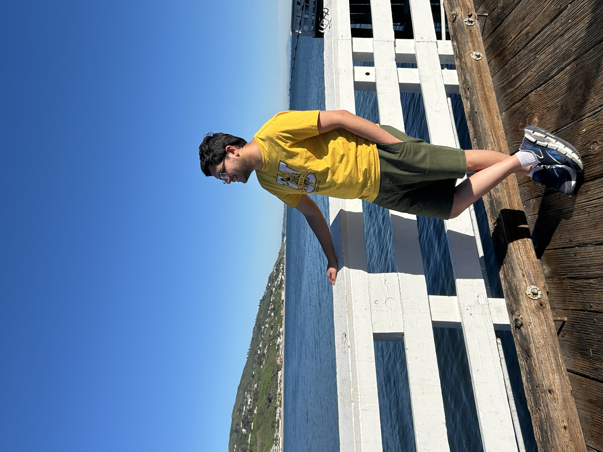
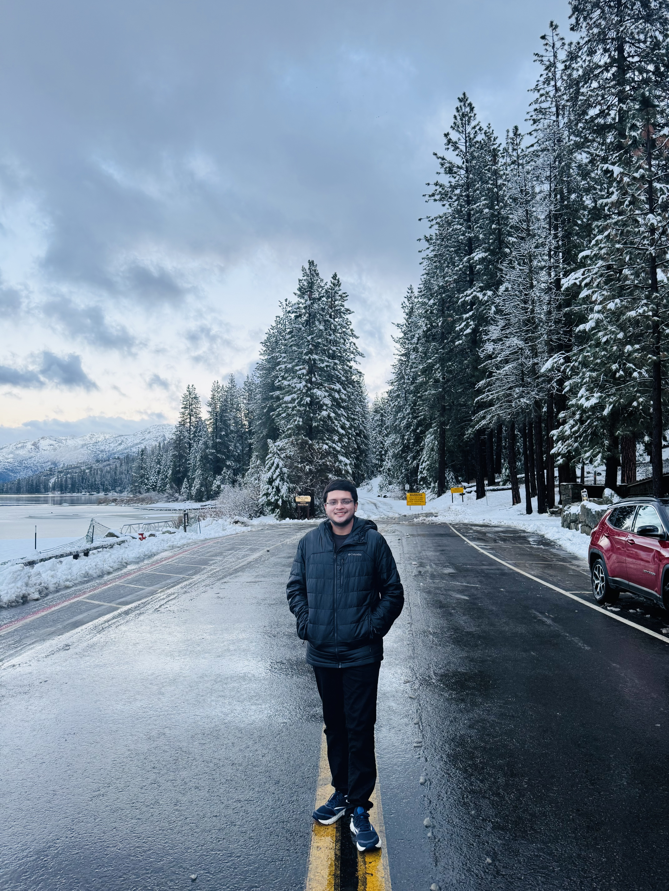

Fun stuff!
This is the travel-blogger version of me coming to life.
Brooklyn Bridge
New York City · easy 10k steps
NYC continues to remind me of my hometown (Bombay). Even though it features in so many movies, the Brooklyn bridge is a must visit. I was unhinged enough to go during peak winter and lived to tell the tale (and battle the wind). Save yourself the survival test and show up early on a sunny morning to beat the crowd.

Santa Monica
California · you beauty.
Definitely a 10/10. My favorite part was the drive to Malibu beach and the ferris wheel (of course!)

Snow
Somewhere in Sequoia NP · you gotta get snow tires
Hmm, Sequoia is serene in the winter, but navigating icy roads on a rainy day can be a pain. 8/10 experience, but if I had a time machine, I would swap the it for a pair of skis at Lake Tahoe.
UMass Amherst
Graduation · MS in Computer Science
Not a travel memory - but a shoutout to Amherst! It is extremely gorgeous in the Fall and also full of grad students who liked Algorithms and NLP/Reinforcement Learning a little too much. This was the day when I officially was allowed to put a "Master's" on LinkedIn. Would recommend visiting. The cap and gown are in a closet somewhere now.